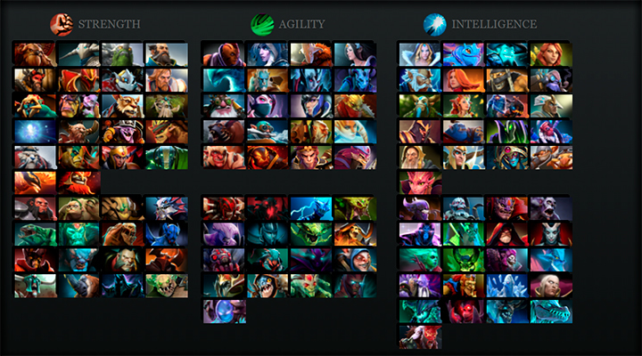
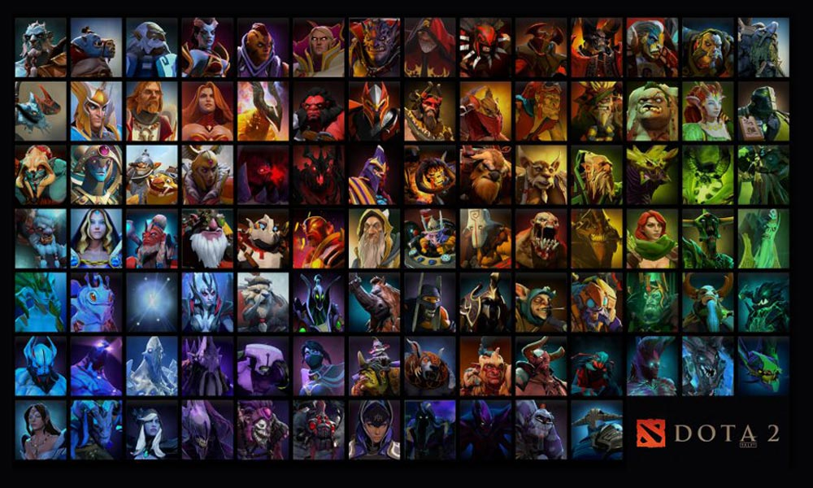

Hrdinové
Hrdinové se dále dělí dle jejich útoků (rolí).

Základní informace
- Hrdinové jsou základním prvkem hry Dota 2, jelikož průběh hry je závislý na jejich akcích.
- Všichni mají různé herní styly, které vyplývají z jedinečných schopností a kombinací atributů.
- Většina hrdinů má odlišnou roli, která jim definuje, jakým způsobem ovlivní bojiště, ačkoliv mnozí hrdinové mohou vykonávat dvě nebo více těchto rolí.
- Dělí se na tři základní skupiny podle toho, co upřednostňují – zda sílu, obratnost či inteligenci.

Role
- Carry - Útočný hrdina pro pozdější fáze hry (Middle game/Late game). Po většinu hry střádá peníze, aby si mohl nakoupit dostatečné vybavení (Itemy); např. Antimage nebo Phantom Assasin.
- Support - Podpůrný hrdina. Mezi jeho úkoly patří podpora carry spoluhráče a mj. rozmisťování tzv. ward, špionážních zařízení, které odhalují pohyb nepřátel v dané oblasti; např. Bane nebo Dazzle.
- Initator - Hrdina, který má schopnosti vhodné na zahájení souboje. Jde např. o hrdiny, kteří mají schopnost omráčit (stun) nebo umlčet (silence) více hrdinů najednou; např. Beastmaster nebo Tidehunter.
- Nuker - Hrdina, který uděluje velké poškození svými spelly; např. Lion nebo Lina
- Jungler - Hrdina, který má výhodu v jungli, může místo na cestě (line) získávat goldy a zkušenosti v lese; např. Enigma nebo Nature’s Prophet.